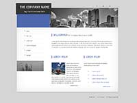

CSS/Templates
Vor einiger Zeit wurden im Rahmen eines Wettbewerbs von designenlassen.de neue Designs für unsere Nutzer erstellt. Sie wurden von Mitarbeitern des Wiki nach Grundsätzen guten Webdesigns bearbeitet. Die 10 besten (und 2 eigene) Entwürfe können Sie hier sehen, herunterladen und sowohl für private als auch kommerzielle Projekte kostenfrei verwenden.
Inhaltsverzeichnis |
[Bearbeiten] Design-Vorlagen
| Design Nr. 01
Dies ist eine farblich ansprechende Seite für eine kleine Firma, Kanzlei oder Privatperson. Die Hintergrundfarben und Schatten sind direkt in der CSS-Datei definiert und können leicht geändert werden. Die grafischen Elemente wie Cliparts werden über die CSS-Datei als Hintergrundbilder geladen. Download: http://selfhtml.apsel-mv.de/templates/design01/design01.zip (Prüfsumme: d2c07154e0009921de253f9f30c471d2) | |
| Design Nr. 02
Eine poppige Seite im 3-Spalten-Layout mit einem auffälligen Header. Mit einigen wenigen Handgriffen kann das Theme der Seite farblich angepasst werden.
| |
|  | Design Nr. 03
Firmenseite in sachlichem Blau in 3-Spalten-Layout mit der Navigation links. Die grafischen Elemente neben den Menüpunkten und den Überschriften werden ohne Grafiken, sondern nur durch CSS {border-left: 5px solid blue;} erzeugt. |
| Design Nr. 04
Diese grafisch ansprechende Seite eines Sportvereins hat 3 feste Spalten, die sich bei kleinerem Bildschirm untereinander positionieren. Die Icons und grafischen Elemente wurden nicht mit Hintergrundbildern, sondern mit dem Icon-Font font-Awesome verwirklicht. | |
| Design Nr. 05
Webseite in modernem Orange mit responsivem Teaser | |
| Design Nr. 06
Webseite mit responsivem Slider und einer Reihe von social-Buttons | |
| Design Nr. 07
farbenfrohe Seite mit großem Header für eigenes Logo und einem (abgeschalteten) Flexslider | |
| Design Nr. 08
Eine grafisch gelungene Seite mit einem großen Teaser, dessen Bilderklärung (figcaption) beim Überfahren mit der Maus einschwebt. Die Pfeile der Navigation sind keine Grafiken, sondern mit CSS erzeugte Pseudoelemente. Der 4-farbige Streifen unter der Überschrift ist ebenfalls nur CSS. | |
| Design Nr. 09
Grafisch sehr ansprechende Autoseite, die aber mit 2 Navigationen und vielen verschiedenen Block-Elementen nur schwer anzupassen wäre. | |
| Design Nr. 10
Eine grafisch abwechslungsreiche Seite, die mit einem strukturierten Hintergrund daherkommt. Der Kopf und die Navigation sind oben fix positioniert. Auf der Startseite findet sich ein Bilder-Karussell, dass man entweder manuell anklicken oder mit wenigen Handgriffen automatisch rotieren lassen kann. Es ist ab einer Breite von 750px responsiv, schmalere Ansichten müssten noch eingestellt werden. | |
| Design Nr. 11
Diese Seite von n-gin zeichnet sich durch eine sehr klar und logisch aufgebaute HTML-Struktur aus, die Änderungen und eigene Kreationen erleichtert. Kommentare im HTML-Code erläutern die Bedeutung der Elemente und Strukturen. Das Design ist zeitlos klassisch, schon für viele Elemente (Tabellen, etc.) definiert und kann leicht verändert werden. | |
| Design Nr. 12
Das Black Scorpions Template von SteelJoker zeigt einen einfachen Seitenaufbau, der jederzeit erweitert werden kann. | |

|
Design Nr. 15
Ein einfaches Design von Jeena Paradies, in dem alle HTML-Strukturen und CSS-Einstellungen in Kommentaren erklärt sind. |
[Bearbeiten] Design Vorlagen herunterladen und verwenden
[Bearbeiten] ZIP-Datei herunterladen
Wenn Sie dieses Layout für ein eigenes Web-Projekt verwenden möchten, klicken Sie auf den folgenden Verweis, um das Layout zu speichern:
- ZIP-Datei.
Speichern Sie die ZIP-Datei in ein Verzeichnis Ihrer Wahl. Die ZIP-Datei enthält HTML-, CSS- und Grafik-Dateien, die zum Layout gehören. Damit Sie diese Dateien bearbeiten können, müssen Sie die ZIP-Datei entpacken.
- Windows: Rechtsklick und "Dateien entpacken" wählen
- Mac: Doppelklick
Entpacken Sie den Inhalt der ZIP-Datei in das Verzeichnis, in dem Sie Ihr Web-Projekt bearbeiten möchten. Falls dieses Verzeichnis noch nicht existiert, legen Sie es vor dem Entpacken der Datei an. Nachdem Sie die ZIP-Datei erfolgreich entpackt haben, können Sie die Projektdateien bearbeiten.
[Bearbeiten] Hinweise zu den Vorlagen
Zu den Layouts gehören folgende Projektdateien:
- index.html
- 1-unterseite.html
- 2-kontakt.html
Den Quelltext dieser HTML-Dateien können Sie mit einem Texteditor oder HTML-Editor bearbeiten. Um den Quelltext zu verstehen und darin arbeiten zu können, benötigen Sie Kenntnisse in HTML und CSS. Eine gute und leicht verständliche Einführung bietet unser HTML/Tutorial, in dem Sie Schritt für Schritt lernen eine Webseite aufzubauen.
- ein Verzeichnis /css
- … in dem sich eine oder mehrere separate CSS-Dateien (meist: style.css) mit globalen Definitionen zur Formatierung von Text und Design befinden. Diese CSS-Datei ist in allen HTML-Dateien des Projekts eingebunden. Zum Verstehen und Bearbeiten dieser Datei sind Kenntnisse in Kapitel CSS erforderlich.
- ein Verzeichnis /img
- … Grafikdateien, die zur Anzeige verwendet werden. Schauen Sie sich die Grafikdateien mit einem Grafikprogramm oder mit dem Browser einzeln an, um zu verstehen, wie sie im Layout wirken. Falls Sie das Layout farblich verändern, werden Sie vermutlich auch die zum Layout gehörenden Grafiken bearbeiten müssen. Dazu benötigen Sie Kenntnisse in Techniken und Begriffen der Bildbearbeitung.